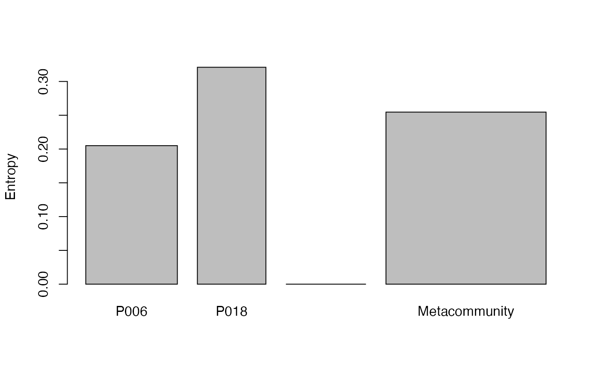

Reduced-bias beta entropy of a metacommunity
BetaEntropy.RdCalculates the reduced-bias beta entropy of order \(q\) between communities.
Usage
BetaEntropy(MC, q = 1, Correction = "Best", Tree = NULL, Normalize = TRUE,
Z = NULL, CheckArguments = TRUE)Arguments
- MC
A
MetaCommunityobject.- q
A number: the order of diversity. Default is 1 for Shannon entropy.
- Correction
A string containing one of the possible corrections accepted by the bias-corrected entropy function (see details) or
"None"or"Best", the default value.- Tree
An object of class
hclust, "phylo" (seeread.tree),phylogorPPtree. The tree must be ultrametric.- Normalize
If
TRUE(default), the entropy returned by the function is normalized by the height of the tree (it is the weighted average value of the entropy in each slice).
IfFALSE, it is the unnormalized weighted sum of the results.- Z
A relatedness matrix, i.e. a square matrix whose terms are all positive, strictly positive on the diagonal. Generally, the matrix is a similarity matrix, i.e. the diagonal terms equal 1 and other terms are between 0 and 1.
- CheckArguments
Logical; if
TRUE, the function arguments are verified. Should be set toFALSEto save time when the arguments have been checked elsewhere.
Details
If Tree is not NULL, then phylogenetic entropy is calculated by bcPhyloBetaEntropy; else, if Z is not NULL, then similarity-based entropy is calculated by bcHqzBeta; else, neutral entropy is calculated by bcTsallisBeta.
The reduced-bias beta entropy of each community is calculated and summed according to community weights.
Note that beta entropy is related to alpha entropy (if \(q\) is not 1) and cannot be compared accross communities (Jost, 2007). Do rather calculate the BetaDiversity of the metacommunity.
Value
An MCentropy object containing entropy values of each community and of the metacommunity.
References
Marcon, E., Scotti, I., Herault, B., Rossi, V. and Lang, G. (2014). Generalization of the partitioning of Shannon diversity. PLOS One 9(3): e90289.
Marcon, E., Herault, B. (2015). Decomposing Phylodiversity. Methods in Ecology and Evolution 6(3): 333-339.
Marcon, E., Zhang, Z. and Herault, B. (2014). The decomposition of similarity-based diversity and its bias correction. HAL hal-00989454(version 3).
Examples
# Load Paracou data (number of trees per species in two 1-ha plot of a tropical forest)
data(Paracou618)
# Estimate Shannon beta entropy
summary(BetaEntropy(Paracou618.MC, 1))
#> Neutral beta entropy of order 1 of metaCommunity Paracou618.MC with correction:
#> Best
#>
#> Entropy of communities:
#> P006 P018
#> 0.2949188 0.4514132
#> Average entropy of the communities:
#> [1] 0.3618884
# Compare without correction
summary(BetaEntropy(Paracou618.MC, 1, Correction = "None"))
#> Neutral beta entropy of order 1 of metaCommunity Paracou618.MC with correction:
#> None
#>
#> Entropy of communities:
#> P006 P018
#> 0.3499358 0.5771645
#> Average entropy of the communities:
#> [1] 0.4471751
# Estimate phylogenetic Shannon beta entropy
summary(BetaEntropy(Paracou618.MC, 1, Tree = Paracou618.Taxonomy) -> e)
#> HCDT beta entropy of order 1 of metaCommunity Paracou618.MC with correction:
#> Best
#>
#> Phylogenetic or functional entropy was calculated according to the tree
#> Paracou618.Taxonomy
#>
#> Entropy is normalized
#> Entropy of communities:
#> P006 P018
#> 0.2049819 0.3210147
#> Average entropy of the communities:
#> [1] 0.2546365
plot(e)
